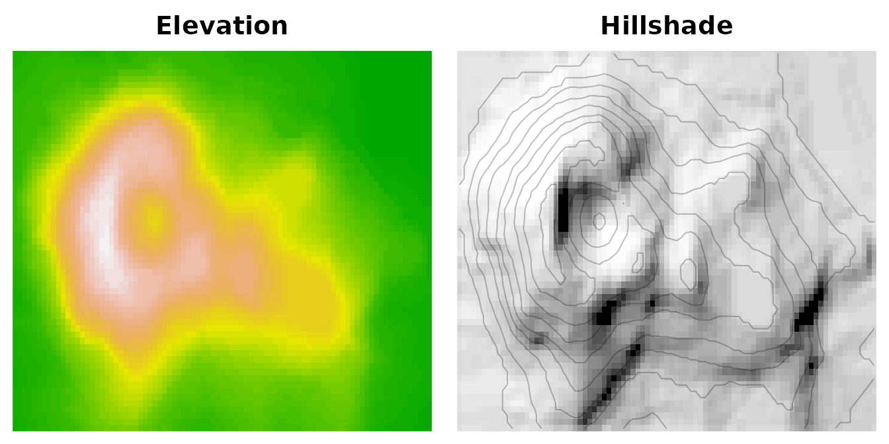

The other articles use small modules written for the occasion. This one runs real software, compiled unchanged to WebAssembly, from R:
- SQLite, the database engine, through its own command-line shell;
- QuickJS, a complete JavaScript engine;
- md4c, a Markdown-to-HTML renderer;
- a C library of terrain functions, called on an R matrix.
All of them run inside nanowasm’s sandbox. The programs use WASI for
their input, output and files, and see only what each call grants them.
The binaries, their versions and licences are listed in vignettes/articles/wasm/
in the package’s repository.
library(nanowasm)
article_module <- function(name) {
wasm_module(file.path("wasm", paste0(name, ".wasm")))
}SQL on a CSV file with SQLite
sqlite3.wasm is the official SQLite shell (version
3.53.4), compiled from the SQLite source with wasi-sdk. Give it a
directory and some SQL on standard input, and it can query the files in
that directory:
sqlite_module <- article_module("sqlite3")
sqlite <- function(sql, dir, db = ":memory:", writable = FALSE) {
# In a read-only directory SQLite can't create the lock file it uses on
# WASI, so open database files as immutable there.
if (!writable && db != ":memory:") db <- paste0("file:", db, "?immutable=1")
wasm_run(
sqlite_module,
args = c("-csv", "-header", db),
stdin = sql,
dirs = dir,
writable = writable,
env = c(HOME = "/nowhere") # no ~/.sqliterc to look for
)
}
data_dir <- file.path(tempdir(), "cars")
dir.create(data_dir, showWarnings = FALSE)
cars <- cbind(model = rownames(mtcars), mtcars)
write.csv(cars, file.path(data_dir, "mtcars.csv"), row.names = FALSE)
res <- sqlite(c(
".import mtcars.csv cars",
"SELECT cyl, count(*) AS n, round(avg(mpg), 1) AS mpg, max(hp) AS max_hp",
"FROM cars GROUP BY cyl ORDER BY cyl;"
), dir = data_dir)
read.csv(text = res$stdout)
#> cyl n mpg max_hp
#> 1 4 11 26.7 97
#> 2 6 7 19.7 175
#> 3 8 14 15.1 335With writable = TRUE it can create a database file,
which stays on disk for later runs:
res <- sqlite(c(
".import mtcars.csv cars",
"CREATE INDEX cars_by_mpg ON cars(mpg);"
), dir = data_dir, db = "cars.db", writable = TRUE)
res$status
#> [1] 0
list.files(data_dir)
#> [1] "cars.db" "mtcars.csv"
# A later, read-only run queries it.
res <- sqlite(
"SELECT model, mpg FROM cars ORDER BY mpg DESC LIMIT 3;",
dir = data_dir, db = "cars.db"
)
read.csv(text = res$stdout)
#> model mpg
#> 1 Toyota Corolla 33.9
#> 2 Fiat 128 32.4
#> 3 Lotus Europa 30.4Without writable = TRUE the program can’t change
anything, and it can never see a file outside the directory it was
given:
sqlite("DELETE FROM cars;", dir = data_dir, db = "cars.db")$stderr
#> [1] "Error near line 1: attempt to write a readonly database\n"
sqlite(".import ../../etc/passwd pw", dir = data_dir)$stderr
#> [1] "line 1: cannot open \"../../etc/passwd\"\n"JavaScript with QuickJS
qjs.wasm is QuickJS-ng’s own WASI
build of its JavaScript engine, downloaded unmodified from its release.
A small helper turns it into a JavaScript evaluator:
qjs_module <- article_module("qjs")
js <- function(code) {
res <- wasm_run(qjs_module, args = c("-e", code))
if (res$status != 0) stop(res$stderr, call. = FALSE)
res$stdout
}
cat(js("
const words = 'the quick brown fox jumps over the lazy dog'.split(' ');
const byLength = Object.groupBy(words, w => w.length);
console.log(JSON.stringify(byLength));
console.log([...new Set(words)].sort().join(', '));
"))
#> {"3":["the","fox","the","dog"],"4":["over","lazy"],"5":["quick","brown","jumps"]}
#> brown, dog, fox, jumps, lazy, over, quick, theData goes in as JSON-ish text and comes back as text:
x <- round(rnorm(8), 2)
code <- sprintf(
"const x = [%s];
const mean = x.reduce((a, b) => a + b) / x.length;
console.log(mean.toFixed(4));",
paste(x, collapse = ", ")
)
as.numeric(js(code))
#> [1] -0.4862
round(mean(x), 4)
#> [1] -0.4862A JavaScript exception becomes an R error:
js("null.property")
#> Error:
#> ! TypeError: cannot read property 'property' of null
#> at <anonymous> (<cmdline>:1:1)Markdown to HTML with md4c
md2html.wasm is md4c’s command-line renderer,
which reads Markdown on standard input and writes HTML:
markdown <- c(
"### Rendered in WebAssembly",
"",
"This paragraph has *emphasis*, `code` and a [link](https://webassembly.org).",
"",
"| engine | language |",
"|--------|----------|",
"| SQLite | C |",
"| QuickJS| C |"
)
html <- wasm_run(article_module("md2html"), args = "--ftables", stdin = markdown)$stdout
cat(html)
#> <h3>Rendered in WebAssembly</h3>
#> <p>This paragraph has <em>emphasis</em>, <code>code</code> and a <a href="https://webassembly.org">link</a>.</p>
#> <table>
#> <thead>
#> <tr>
#> <th>engine</th>
#> <th>language</th>
#> </tr>
#> </thead>
#> <tbody>
#> <tr>
#> <td>SQLite</td>
#> <td>C</td>
#> </tr>
#> <tr>
#> <td>QuickJS</td>
#> <td>C</td>
#> </tr>
#> </tbody>
#> </table>And here it is, rendered on this page:
Rendered in WebAssembly
This paragraph has emphasis, code and a
link.
| engine | language |
|---|---|
| SQLite | C |
| QuickJS | C |
A C library on an R matrix
Not every module is a program. terrain.wasm is a small C
library, built as a WASI “reactor”: it has no main, but
exports functions, plus its own alloc() and
release() for R to ask for space in its memory. Its
hillshade() computes how a landscape would look lit from
the north-west, the classic way to draw relief. volcano’s
cells are 10 m wide; passing 5 exaggerates the relief twice, which makes
it easier to see:
terrain <- wasm_instantiate(article_module("terrain"), wasi = wasm_wasi())
wasm_exports(terrain)
#> name kind type
#> 1 _initialize function () -> ()
#> 2 alloc function (i32) -> i32
#> 3 hillshade function (i32, i32, i32, i32, f64, f64, f64) -> ()
#> 4 memory memory min 2
#> 5 release function (i32) -> ()
#> 6 slope function (i32, i32, i32, i32, f64) -> ()
# Run one of the library's grid functions on matrix z.
grid_fn <- function(fun, z, ...) {
mem <- wasm_memory(terrain)
n <- length(z)
input <- terrain$alloc(8L * n)
output <- terrain$alloc(8L * n)
on.exit({
terrain$release(input)
terrain$release(output)
})
wasm_write(mem, input, as.vector(z), "f64")
wasm_call(terrain, fun, input, output, nrow(z), ncol(z), ...)
matrix(wasm_read(mem, output, n, "f64"), nrow = nrow(z))
}
shade <- grid_fn("hillshade", volcano, 5, 315, 45)
slope <- grid_fn("slope", volcano, 10)
summary(as.vector(slope))
#> Min. 1st Qu. Median Mean 3rd Qu. Max.
#> 0.000 6.379 13.520 14.330 21.191 43.032
op <- par(mfrow = c(1, 2), mar = c(0.5, 0.5, 2, 0.5))
image(volcano, col = terrain.colors(50), axes = FALSE, main = "Elevation")
image(shade, col = grey.colors(50, 0, 1), axes = FALSE, main = "Hillshade")
contour(volcano, add = TRUE, drawlabels = FALSE, col = "#00000040")
par(op)How fast is it?
nanowasm interprets WebAssembly rather than compiling it to machine code, so it is slower than a native build or a compiling runtime. For programs like these that is rarely what you notice:
bench <- function(expr) round(system.time(expr)[["elapsed"]], 2)
c(
sqlite_query = bench(sqlite("SELECT 1;", dir = data_dir)),
javascript = bench(js("console.log(1)")),
markdown = bench(wasm_run(article_module("md2html"), stdin = markdown)),
hillshade = bench(grid_fn("hillshade", volcano, 5, 315, 45))
)
#> sqlite_query javascript markdown hillshade
#> 0.01 0.05 0.01 0.03Times are in seconds, and include loading each module: SQLite and QuickJS are about 1.5 MB of WebAssembly each.